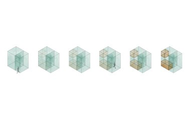
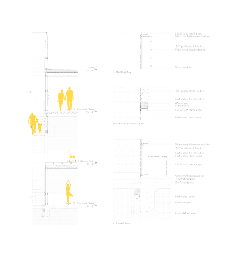

Hide-Reveal
Technical Communications -- Matt Fajkus Team -- Saranya Kanagaraj Fall 2015
Access and visibility of a space change over time based on the scheduling of programs and visitors’ locations. Hide/Reveal uses this fact to mix a series of “third places” - familiar hangouts other than home and work - into a new retiree community along a major walking trail in Leander, TX. Apartments and bed-and-breakfast rooms share transitional space with programs that sustain the social, physical, and mental well-being of residents and visitors.

Vertical cores throughout the community act as points of pause that tie the buildings together and promote the comfort of a “third place”. Each core, unconditioned and made of double-layered corten steel, structurally integrates into the surrounding programs. The perforated steel panels support small scale additions — seating in the yoga studio, plants along the stairs, mailboxes around apartments. Parallel to the main trail, a secondary path at ground level connects the cores and a surrounding combination of enclosed and open spaces. While residents can access the market, outdoor theater and other programs from either path, having an option provides ease of access that promotes lifestyles of independence as residents age.
